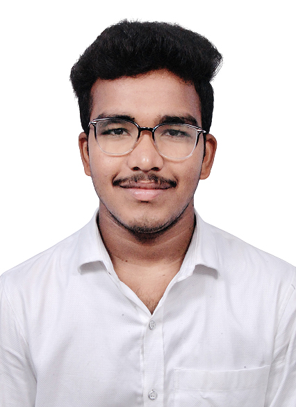

Pavan Kumar Thota

Summary
I am a hardworking and dedicated individual with experience in Web Development and Deep Learning
Eduaction
- Bachelor of Technology, CSE - National Institute of Technology, Tiruchirappalli (2019-2023)
- 12th-Standard - Sri Chaitanya Junior College, Hyderabad (2017-2019)
- 10th-Standard - SRM High School, Kodad (2016-2017)
Work Experience
-
EID Intern - GE Healthcare.
June 2022 - July 2022
- Worked on a project called Ontology Model Development of GE Enterprise Data.
- I have learnt JavaScript and worked on JSONata Exerciser.
- I had built a canonical structure which consists of entities for and application called IPM using JSON-LD.
Skills
- Good at Data Structures and Algorithms
- Web Developer
Awards and Certifications
- Recall Scholarship.
- NSP Scholarship Recepient
Other